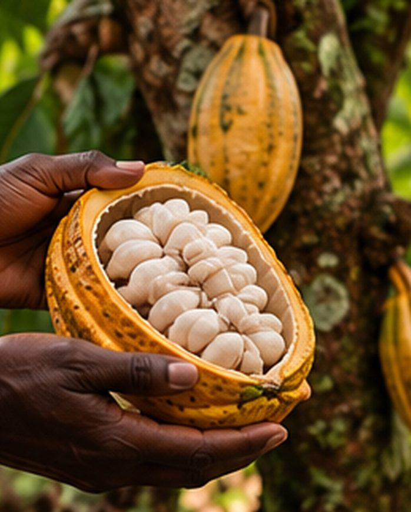

Accueil → Univers professionnel
06 · Transition écologique
Faire durer la transformation.
Un territoire ne change pas par décret. Il change lorsque l’on comprend ses réalités, ses acteurs, ses ressources et les conditions qui permettent à la transformation de durer.

TEFA
Projet en développement. La démarche s'intéresse notamment aux coopératives agricoles, à leurs pratiques, à leur gouvernance, à leur accès au marché, à leur financement et à leur capacité d'innovation.
Une transition située
La transition écologique est traitée comme une transformation concrète des systèmes humains, économiques et territoriaux, pas comme un décor de communication.
Un territoire ne change pas par décret. Il change lorsque l’on comprend ses réalités, ses acteurs, ses ressources et les conditions qui permettent à la transformation de durer.
Vous travaillez sur un projet de transition écologique ou d’économie circulaire ?